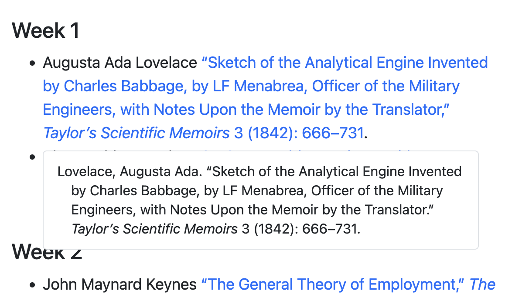

![]()
Pandoc-flavored Markdown makes it really easy to cite and reference things. You can write something like this (assuming you use this references.bib BibTeX file):
---
title: "Some title"
bibliography: references.bib
---
According to @Lovelace:1842, computers can calculate things. This was important
during World War II [@Turing:1936].And it’ll convert to this after running the document through pandoc:
Some title
According to Lovelace (1842), computers can calculate things. This was important during World War II (Turing 1936).
References
This is all great and ideal when working with documents that have a single bibliography at the end.
The limits of default in-text citations
Some documents—like course syllabuses and readings lists—don’t have a final bibliography. Instead they have lists of things people should read. However, if you try to insert citations like normal, you’ll get the inline references and a final bibliography:
---
title: "Some course syllabus"
bibliography: references.bib
---
## Course schedule
### Week 1
- [@Lovelace:1842]
- [@Turing:1936]
### Week 2
- [@Keynes:1937]Some course syllabus
Course schedule
Week 1
Week 2
References
The full citations are all in the document, but not in a very convenient location. Readers have to go to the back of the document to see what they actually need to read (especially if there’s a website or DOI URL they need to click on).
Making note-based styles appear in the text
It would be great if the full citation could be included in the lists in the document instead of at the end of the document.
And it’s possible, with just a minor tweak to the Citation Style Language (CSL) style file that you’re using (thanks to adam.smith at StackOverflow for pointing out how).
By default pandoc uses Chicago author-date for bibiliographic references—hence the (Lovelace 1842) style of references. You can download any other CSL file from Zotero’s searchable style repository, from the Citation Styles project’s searchable list, or clone the full massive GitHub repository of styles to find others, like Chicago notes, APA, MLA, and so on.
The easiest way to get full citations inline is to find a CSL that uses note-based citations, like the Chicago full note style and edit the CSL file to tell it to be an inline style instead of a note style.
The second line of all CSL files contains a <style> XML element with a class attribute. Inline styles like APA and Chicago author date have class="in-text":
<?xml version="1.0" encoding="utf-8"?>
<style xmlns="http://purl.org/net/xbiblio/csl" class="in-text" version="1.0" demote-non-dropping-particle="display-and-sort" page-range-format="chicago">
<info>
<title>Chicago Manual of Style 17th edition (author-date)</title>
...…while note-based styles like Chicago notes have class="note":
<?xml version="1.0" encoding="utf-8"?>
<style xmlns="http://purl.org/net/xbiblio/csl" class="note" version="1.0" demote-non-dropping-particle="display-and-sort" page-range-format="chicago">
<info>
<title>Chicago Manual of Style 17th edition (full note)</title>
...If you download a note-based CSL style and manually change it to be in-text, the footnotes that it inserts will get inserted in the text itself instead of as foonotes.
Here I downloaded Chicago full note, edited the second line to say class="in-text", and saved it as chicago-syllabus.csl:
<?xml version="1.0" encoding="utf-8"?>
<style xmlns="http://purl.org/net/xbiblio/csl" class="in-text" version="1.0" demote-non-dropping-particle="display-and-sort" page-range-format="chicago">
<info>
<title>Chicago Manual of Style 17th edition (full note, but in-text)</title>
...I can then tell pandoc to use that CSL when rendering the document:
---
title: "Some course syllabus"
bibliography: references.bib
csl: chicago-syllabus.csl
---
## Course schedule
### Week 1
- [@Lovelace:1842]
- [@Turing:1936]
### Week 2
- [@Keynes:1937]…and the full references are included in the document itself!
Some course syllabus
Course schedule
Week 1
- Augusta Ada Lovelace, “Sketch of the Analytical Engine Invented by Charles Babbage, by LF Menabrea, Officer of the Military Engineers, with Notes Upon the Memoir by the Translator,” Taylor’s Scientific Memoirs 3 (1842): 666–731.
- Alan Mathison Turing, “On Computable Numbers, with an Application to the Entscheidungsproblem,” Journal of Math 58, no. 345-363 (1936): 230–65.
Week 2
- John Maynard Keynes, “The General Theory of Employment,” The Quarterly Journal of Economics 51, no. 2 (1937): 209–23.
References
A few minor tweaks to perfect the output
This isn’t quite perfect, though. There are three glaring problems with this:
We have a bibliography at the end, since Chicago notes-bibliography requires it. This makes sense for regular documents where you have footnotes throughout the body of the text with a list of references at the end, but it’s not necessary here.
The in-text references all have hyperlinks to their corresponding references in the final bibliography. We don’t need those since the linked text is the bibliography.
If you render this in Quarto, you get helpful popups that contain the full reference when you hover over the link. But again, the link is the full reference, so that extra hover information is redundant.

All these problems are easy to fix with some additional YAML settings that suppress the final bibliography, turn off citation links, and disable Quarto’s hovering:
---
title: "Some course syllabus"
bibliography: references.bib
csl: chicago-syllabus.csl
suppress-bibliography: true
link-citations: false
citations-hover: false
---
## Course schedule
### Week 1
- [@Lovelace:1842]
- [@Turing:1936]
### Week 2
- [@Keynes:1937]Perfect!
Some course syllabus
Course schedule
Week 1
- Augusta Ada Lovelace, “Sketch of the Analytical Engine Invented by Charles Babbage, by LF Menabrea, Officer of the Military Engineers, with Notes Upon the Memoir by the Translator,” Taylor’s Scientific Memoirs 3 (1842): 666–731.
- Alan Mathison Turing, “On Computable Numbers, with an Application to the Entscheidungsproblem,” Journal of Math 58, no. 345-363 (1936): 230–65.
Week 2
- John Maynard Keynes, “The General Theory of Employment,” The Quarterly Journal of Economics 51, no. 2 (1937): 209–23.
Using other styles
This is all great and super easy if you (like me) are fond of Chicago. What if you want to use APA, though? Or MLA? Or any other style that doesn’t use footnotes?
For APA, you’re in luck! There’s an APA (curriculum vitae) CSL style that you can use, and you don’t need to edit it beforehand—it just works:
---
title: "Some course syllabus with APA"
bibliography: references.bib
csl: apa-cv.csl
suppress-bibliography: true
link-citations: false
citations-hover: false
---
## Course schedule
### Week 1
- [@Lovelace:1842]
- [@Turing:1936]
### Week 2
- [@Keynes:1937]Some course syllabus with APA
Course schedule
Week 1
- Lovelace, A. A. (1842). Sketch of the analytical engine invented by Charles Babbage, by LF Menabrea, officer of the military engineers, with notes upon the memoir by the translator. Taylor’s Scientific Memoirs, 3, 666–731.
- Turing, A. M. (1936). On computable numbers, with an application to the Entscheidungsproblem. Journal of Math, 58(345-363), 230–265.
Week 2
- Keynes, J. M. (1937). The general theory of employment. The Quarterly Journal of Economics, 51(2), 209–223.
For any other style though, you’re (somewhat) out of luck. The simple trick of switching class="note" to class="in-text" doesn’t work if the underlying style is already in-text like APA or Chicago author-date. You’d have to do some major editing and rearranging in the CSL file to force the bibliography entries to show up as inline citations, which goes beyond my skills.
As a workaround you can use the {RefManageR} package in R to read the bibliography file with R and output the bibliography part of the citations as Markdown. Steve Miller has a helpful guide for this here.
Citation
@online{heiss2023,
author = {Heiss, Andrew},
title = {One {Simple} {Trick}\textsuperscript{{TM}} to Create Inline
Bibliography Entries with {Markdown} and Pandoc},
date = {2023-01-09},
url = {https://www.andrewheiss.com/blog/2023/01/09/syllabus-csl-pandoc/},
doi = {10.59350/hwwgk-v9636},
langid = {en}
}